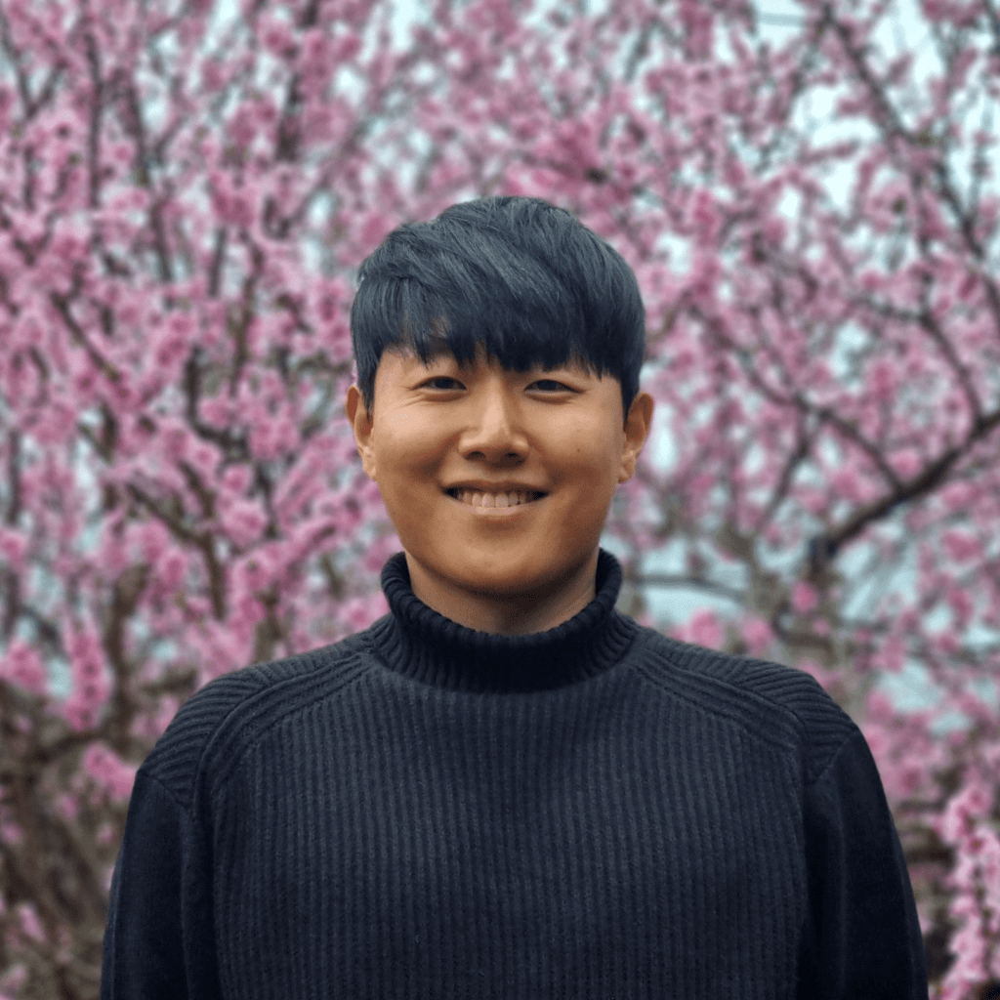

Postdoctoral Researcher
Dr. Seonghyun Lim
Seonghyun is a postdoctoral researcher at Rice University. His research focuses on uncertainty quantification and stochastic modeling for seismic risk analysis and resilience assessment of complex infrastructure systems under extreme events.
Topic:
Uncertainty quantification in natural hazards
System-level resilience assessment